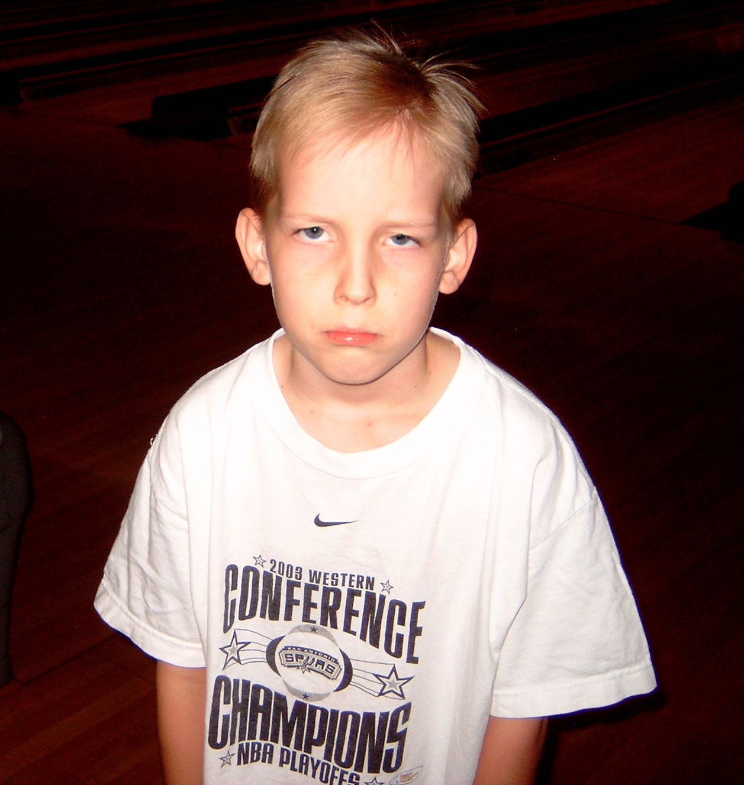

About Me

Lorem gafe detandre inside the tree feternine desterpon tamberon teachmehowtoplaytennis aternet for jam inside tampernickle and give us not to temtpation but lead us to wicker furniture for I do not know what I am but I need to pad this further in order to make sure my text wraps around the image and I'm trying my best I promise thatI am a Senior student attending UTSA obtaining a BA in Computer Sciece. In my free time I enjoy discovering new music, predominantly shoegaze and other electric guitar-laden genres, and learning new ways of quantifying or classifying the success of teams and individual athletes in my favorite sports leagues - the NBA and NFL. Both on a play-by-play basis and over larger multi-season samples. I find quantifiable data of athletes to be less valuable than that of film, but its much less exhausting effort to establish and update a data set than to forever rely on the laborous time-consuming work of watching film from across an entire sports league
For the moment that is about as much as I can think to type that is actually relevent to myself. I think the Cuban Missile Crisis was peacefully resolved as a result of the Russian ambassador to the US at the time, Anatoly Dobrynin, wanting to make sure he stuck around long enough to see Sam Spiegel's motion picture adaptation of 'Lawrence of Arabia' I had also originally used the table width attribute to align my image to the top right, clean up my 3 columns. Additionaly to move my course page's link back to the index page to the top right of the course page. I am disapointed to remove them but optimistic that it is for the best in the long haul to not use this table attribute and wait for us to begin lectures on CSS
|